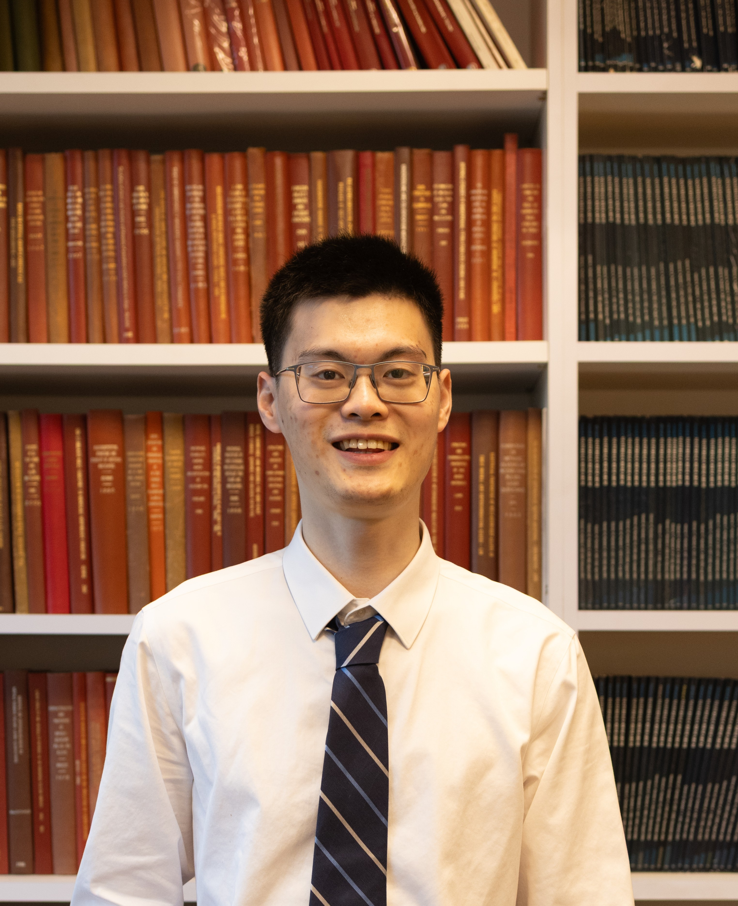

People
Science is done by people. You are central to the lab.
The Xi Lab is launching. This page will grow into a group directory with
student, postdoc, undergraduate, alumni, and collaborator profiles.

Dawei Xi
Upcoming Assistant Professor, Harvard SEAS–MSME
Dawei studies electrochemistry, focused on charge-carrier management, membranes,
interfacial ion/electron transfer, sustainable energy storage, carbon
management and electrochemical manufacturing.
Download CV
Join us
Future lab members
Graduate students · Postdocs · Undergraduates
The lab will recruit students and researchers interested in electrochemistry,
materials chemistry, membranes, separations, ion transport, reactor design,
characterization, and data-enabled molecular/materials discovery.
See opportunities
Mentoring record
Training independent researchers.
Dawei has mentored undergraduate and graduate researchers across various projects. Past mentees
have contributed to publications and patent filings and have gone on to graduate
programs at institutions including MIT, Princeton, Harvard, University of Toronto,
University of Cambridge, Nanjing University, and Peking University.
Lab culture
Supportive, open, rigorous, and individualized.
Supportive environment
Students should feel safe to ask questions, share ideas, troubleshoot failures, and grow scientifically.
Openness
Collaboration across chemistry, materials science, mechanical engineering, and chemical engineering is encouraged.
Inspiration and innovation
Bold hypotheses and careful experiments are both valued; failed experiments are treated as learning steps.
Respect for individuality
Mentoring is customized to each researcher’s goals, strengths, and growth trajectory.